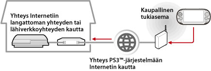

Verkko > Etäkäyttö (Internetin kautta)
Etäkäyttö (Internetin kautta)
Tämän toiminnon käyttäminen PS Vita -järjestelmässä tai PSP™-järjestelmässä saattaa edellyttää, että PS3™-järjestelmän ja PS Vita -järjestelmän tai PSP™-järjestelmän käyttöjärjestelmät päivitetään.
Voit muodostaa etäkäyttöä tukevalla laitteella, kuten PS Vita -järjestelmällä tai PSP™-järjestelmällä, yhteyden PS3™-järjestelmään Internetin kautta langattoman tukiaseman avulla. Etäkäyttö edellyttää, että PS3™-järjestelmä on etäkäytön valmiustilassa.

Vihje
Kaupallisten tukiasemapalveluiden (WLAN-verkkojen) käyttötavat ja kustannukset vaihtelevat palveluntarjoajan mukaan. Pyydä lisätietoja palveluntarjoajalta.
Valmisteleminen (1) (PS3™-järjestelmä ja etäkäyttöä tukeva laite)
Kun käytät etäkäyttöä ensimmäisen kerran, rekisteröi (yhdistä) etäkäyttöä tukeva laite, esimerkiksi PS Vita- tai PSP™-järjestelmä, PS3™-järjestelmään. Kun haluat rekisteröidä (yhdistää) järjestelmän, valitse  (Asetukset) >
(Asetukset) >  (Etäkäyttöasetukset) > [Rekisteröi laite].
(Etäkäyttöasetukset) > [Rekisteröi laite].
Valmisteleminen (2) (etäkäyttöä tukeva laite)
Muodosta verkkoyhteys PS Vita- tai PSP™-järjestelmän liittämiseksi tukiasemaan. Jos käytät etäkäyttöä Internetin kautta, voit käyttää langatonta tukiasemaa. Lisätietoja etäkäyttöä tukevan laitteen verkkoasetuksista on laitteen mukana toimitetuissa käyttöohjeissa.
Etäkäytön käyttäminen PS Vita -järjestelmässä
1. |
Valitse PS3™-järjestelmästä |
|---|
 (Verkko) >
(Verkko) >  (Etäkäyttö).
(Etäkäyttö).2. |
Valitse PS Vita -järjestelmästä |
|---|
 (PS3-etäkäyttö) > [Aloitus].
(PS3-etäkäyttö) > [Aloitus].3. |
Napauta [Muodosta yhteys Internetin kautta]. |
|---|
Vihjeitä
- Jos siirryt etäkäytön aikana toisen sovelluksen näyttöön, etäkäyttöyhteys suljetaan 30 sekunnin kuluttua.
- Yhdistä PS Vita -järjestelmässä Sony Entertainment Network -tilisi, jota käytät PS3™-järjestelmässä. Jos olet luonut tilin PS Vita -järjestelmällä tai tietokoneella, voit käyttää myös kyseistä tiliä PS3™-järjestelmän kanssa.
Toiminto etäkäyttö PSP™-järjestelmässä
1. |
Valitse PS3™-järjestelmässä |
|---|---|
2. |
Valitse PSP™-järjestelmässä |
3. |
Valitse [Muodosta yhteys Internetin kautta]. |
4. |
Valitse yhteysluettelosta sen tukiaseman yhteys, jota käytetään etäkäytössä. |
5. |
Kirjoita käytettävän tilin Sony Entertainment Network -käyttäjätunnus ja -salasana. |
 (Etäkäyttö).
(Etäkäyttö).Etäkäytön käyttäminen Internetin kautta
Etäkäyttöä ei ehkä voi käyttää Internetin kautta käytössä olevasta verkkolaitteesta riippuen. Tutustu seuraaviin tietoihin tällaisissa tapauksissa.
- Valitse (Asetukset)-kohdan alta
 (Verkkoasetukset)-kohdasta [Internet-yhteyden testaus], jos haluat tarkistaa, että PSP™-järjestelmä voi muodostaa yhteyden Internetiin ja PSNSM-verkkoon.
(Verkkoasetukset)-kohdasta [Internet-yhteyden testaus], jos haluat tarkistaa, että PSP™-järjestelmä voi muodostaa yhteyden Internetiin ja PSNSM-verkkoon. - Jos käytössä oleva reititin tukee UPnP-ominaisuuksia, ota reitittimen UPnP-toiminnot käyttöön.
- Jos käytettävä reititin ei tue UPnP-toimintoja, reitittimen porttien uudelleenohjaus on määritettävä sallimaan yhteydet PS3™-järjestelmään Internetistä. Etäkäytössä käytettävä portti on TCP: 9293. Lisätietoja tämän asetuksen määrittämisestä on reitittimen mukana toimitetuissa ohjeissa.
- Porttien uudelleenohjaus on toiminto, jonka avulla tiettyyn porttiin saapuvia signaaleja voidaan ohjata haluttuun kohdeporttiin. Tästä toiminnosta käytetään toisinaan myös nimityksiä "porttien määrittäminen" ja "osoitteenmuunnos".
- Jos PS3™-järjestelmä on liitetty Internetiin kahden tai useamman reitittimen kautta, tietoliikenne ei ehkä toimi oikein.
Vihjeitä
- Reititin on laite, jonka avulla samaa Internet-yhteyttä voidaan käyttää monissa eri laitteissa.
- Reitittimen ja Internet-palveluntarjoajan suojausasetukset saattavat myös rajoittaa tietoliikennettä. Lisäohjeita saa käytettävän verkkolaitteen käyttöohjeesta ja Internet-palveluntarjoajalta.